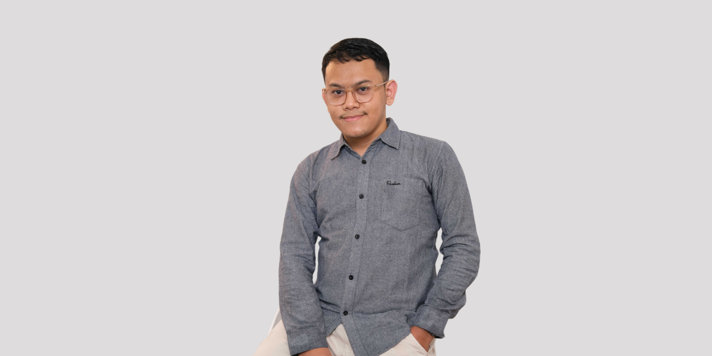
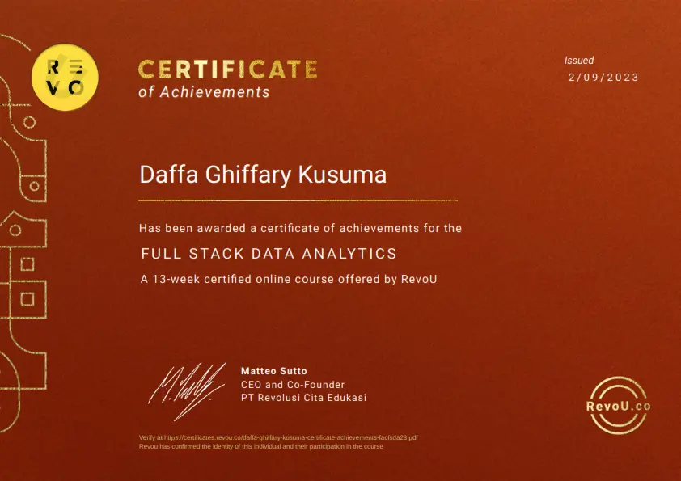
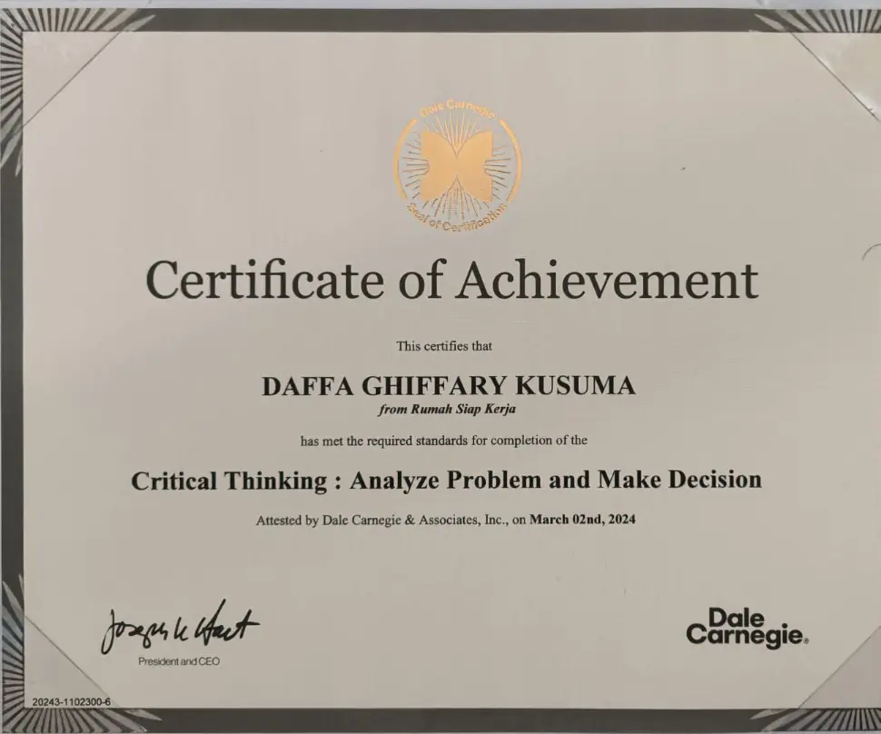
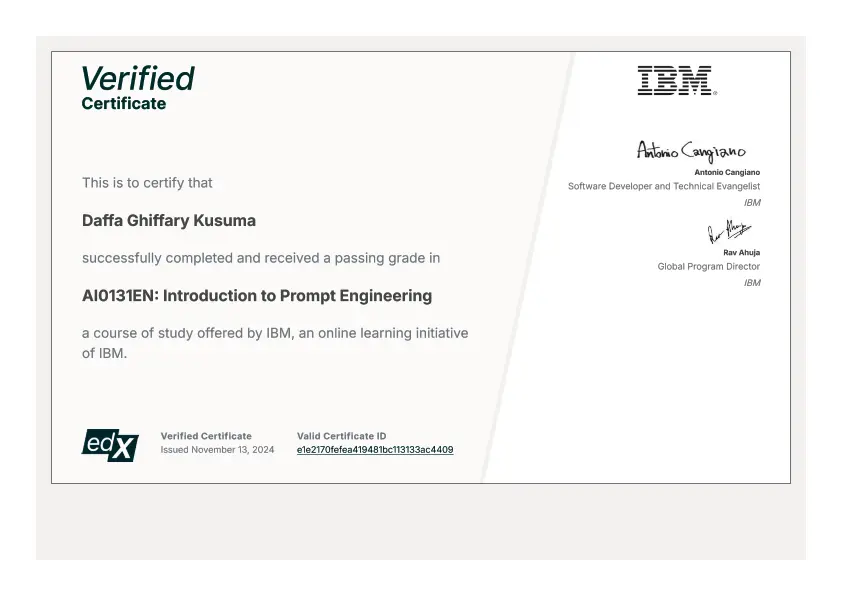
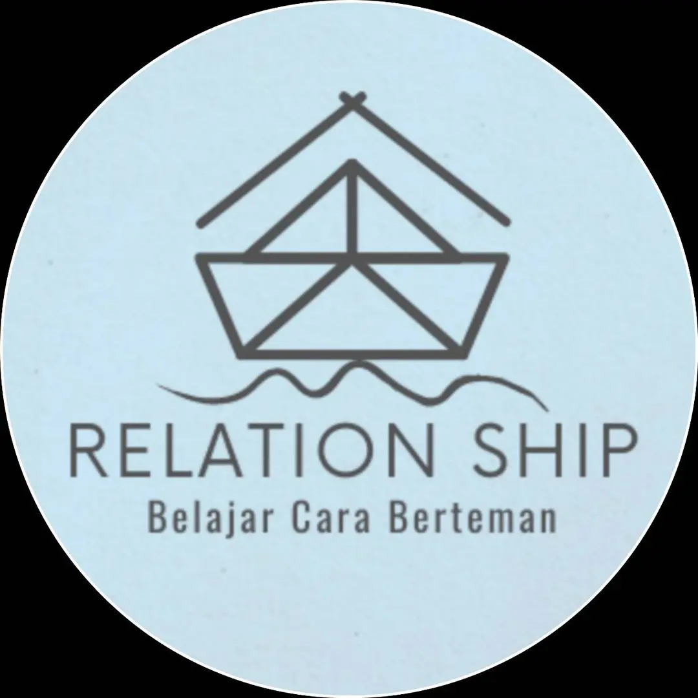
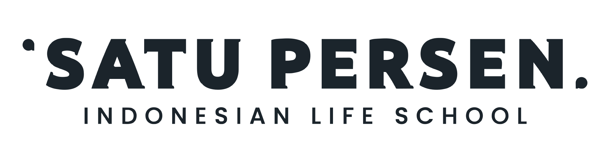

End-to-End Ownership
I handle the full learning cycle: TNA, curriculum, learning assets, delivery flow, operations, evaluation, reporting, and program improvement.
Learning Designer & Program Manager
I'm Daffa Ghiffary Kusuma. I design and run end-to-end learning programs, from needs analysis and curriculum to facilitation, evaluation, reporting, and continuous improvement.

I connect learning design, psychology, program operations, data analytics, and AI so training is not only engaging, but measurable, repeatable, and useful at work.
I handle the full learning cycle: TNA, curriculum, learning assets, delivery flow, operations, evaluation, reporting, and program improvement.
I turn concepts into activities, simulations, worksheets, OJT tasks, and feedback loops that help learners apply skills immediately.
I use assessments, dashboards, learning gain, satisfaction data, behavioral indicators, and client reports to show what changed and what to improve next.
A clearer view of how I turn business, workforce, and learner needs into usable learning systems.
I design the full program architecture: needs analysis, curriculum, delivery flow, operations, evaluation, and reporting.
"Programnya menarik dan membantu kami belajar menjadi wirausaha yang baik." - Fina Nurita, SMKN 2 Tuban
I create practical materials that facilitators can deliver and learners can apply without heavy explanation.
"Decks yang Daffa susun membuat tim langsung siap mengeksekusi." - Irvandias Sanjaya, Kerja Cer-Dias
I use data and AI to make learning decisions sharper, from dashboards to competency assessment support.
"His deep analysis ensures training programs are both impactful and tailored to our needs." - Nadyatiana Sagita, Rumah Siap Kerja
Capabilities I use to move learning programs from idea to implementation, measurement, and improvement.

REVOU

Dale Carnegie

IBM
Partners value clear structure, practical delivery, and evidence they can act on after the program ends.
"Daffa is a strategic, data-driven expert who delivers exceptional results. His deep analysis ensures training programs are both impactful and tailored to our needs."
"Daffa bridged advanced data science and practical public sector application with exceptional skill. He helped turn a competency knowledge base into a scalable RAG autograding system across 9 core competencies, 27 behavioral indicators, and more than 100,000 assessment records, achieving 84% to 92.5% accuracy against human expert benchmarks."
"Ghiffary stood out among others. He gave insightful solutions and delivered a good presentation."
"I consider myself extremely fortunate that my first professional work experience involved collaborating with a colleague and leader like Daffa. He is not only an unwavering source of support but also brings invaluable fresh perspectives to our team. Daffa's expertise in the field of data analysis is truly exceptional. With his profound knowledge, he consistently streamlined the process of monitoring and evaluating the programs we undertook. Daffa is not just an experienced data analyst but also excels in articulating outcomes in a clear manner, allowing our team to make informed decisions based on the insights provided. What truly sets Daffa apart is his outstanding creative problem-solving ability. He consistently comes up with innovative solutions when we encounter obstacles or challenges during program implementation. His knack for finding paths around these hurdles has greatly contributed to our team's success on numerous occasions. I wholeheartedly recommend Daffa to be a part of any team or project fortunate enough to have him. His leadership, data analysis skills, and creative problem-solving abilities are valuable assets to any organization."
"There is no better colleague than Daffa. He is one of the most dedicated professionals I've worked with and is willing to put that extra help whenever you need it. Daffa is very passionate about data analysis and his problem-solving approach is out of this world. He always managed to find solutions using data and resolving the problem. His expertise as a Monitoring and Evaluation Specialist is considerable. I therefore would not hesitate to recommend Daffa, as he would be a valuable member for any organization."
"Training ini sangat baik karena mentor dan fasilitator membantu kami menggali potensi yang sebelumnya tidak terlihat."
"Sebelumnya belum pernah ada kegiatan seperti ini di asrama. Saya belajar memimpin dan bertanggung jawab dalam proyek kelompok."
"Saya berminat melanjutkan Budikdamber setelah lulus karena pelatihannya membuka cara pikir baru tentang kewirausahaan."
"Programnya menarik dan membantu kami belajar menjadi wirausaha yang baik melalui praktik langsung."
"Sangat baik untuk pengenalan kewirausahaan dan memotivasi siswa untuk mencoba."
"Program ini membimbing siswa berani berkreasi, bereksperimen, dan memulai usaha."
"Daffa merancang training kami dengan rapi, menyenangkan, dan tepat waktu. Materi yang dibawakan membuat tim langsung siap mengeksekusi."

